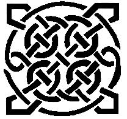

Stonehaven Pipe Band
Our History of the band starts with Pipe Major George McDonald, the founder of the Stonehaven Pipe Band.
Pipe Major George McDonald spent his early days with his grandparents at Finzean. Later, after leaving school, he entered the postal service at Stonehaven. With a keen interest in the Great Highland Bagpipe, he joined the 5th Volunteer Battalion of the Gordon Highlanders (Deeside) on the 21st December 1892. In 1905, he was promoted to Pipe Major of the 5th Battalion and when the 1/7th (Deeside Highland) Battalion was formed he immediately transferred and formed the Stonehaven Pipe Band.
In August 1914, the band, alongside the Rector of Mackie Academy Major 'Billie' Riddoch’s 'D' Company 1/7th, marched from Stonehaven to Banchory as a Battalion before proceeding to Bedford for further training. In May 1915, they set off for France, little knowing what was awaiting them.
After the war, Pipe Major McDonald played a major role in reforming a territorial company at Stonehaven and a strong Pipe Band. The latter performed at many civil and military, including the unveiling of the Aberdeen War Memorial and several other engagements in Kincardineshire. When the Battalion Headquarters was transferred to Bucksburn, Pipe Major McDonald retired. After his 37-years tenure, he was succeeded by one of his younger student pipers, Pipe Major George Cruickshank, himself a famous and successful solo piper in his day.
As of 2020, Pipe Major McDonald has since been succeeded by a further 15 Pipe Majors, all following in his extremely large brogues!
Although the traditions and goals of the Pipe Band have remained the same over the years, the tartan has changed. The first tartan, the Hunting Gordon, was the local tartan worn by the Gordon Highlanders. This changed to The Royal Stewart in 1965 when the Stewart family took charge of the band. In 1987, the tartan worn was once again changed, this time to Stewart of Appin. 1998 has, to date, seen the last change and the band currently wears the Modern Red Robertson tartan. The main reason for the change in tartan is largely due to wear and tear - an unavoidable outcome when most weekends are spent performing in all weathers, Summer and Winter.
The Band joined the Royal Scottish Pipe Band Association and began to compete, first locally and then further afield. Their first major success came in 1980 in the form of Grade 4 European Champions, under the leadership of Pipe Major Raymond Whyte.
Then, under the leadership of Pipe Major Brian Elrick, there was no looking back. The band went from strength to strength and up the grades to the Premier grade, in world pipe band competition, Grade 1. During this time, band members came from as far afield as Forres in the North and Kirriemuir and Kirkcaldy in the South. These dedicated musicians travelled twice weekly to practice, some completing round trips of over 200 miles on each occasion. Achieving first and second place in Grade 4 quartets and full band competitions.
Now in 2020, Stonehaven Pipe Band continues its legacy in promoting great music, staying true and close to its community with a passion for playing.